Fineline Tattoo · desde 2015
MaríliaCrozatti
Traço fino, energéticas feitas a partir do seu mapa astral e reformas que devolvem o orgulho da tatuagem antiga.
- Studio Ink'Alma, Campinas
- Atendimento com horário marcado
Pra mim, tatuar é traduzir o que vive em você em forma de traço. Cada linha tem motivo e cada símbolo uma intenção. Aqui trabalho com algo que é feito pra você, não pra vitrine.
Marília Crozatti
Estilos que eu trabalho
A base de tudo é o fineline: traço fino, preciso e delicado. O desafio técnico, e a beleza, está em manter as linhas finas consistentes e duráveis com o tempo.
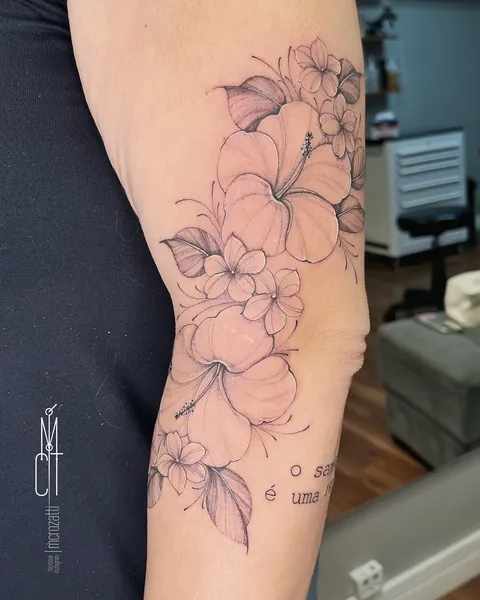
Fineline
Linhas limpas, sutis e minimalistas, sem preenchimento ou sombreamento pesado. Flores, símbolos pequenos e escritas leves.
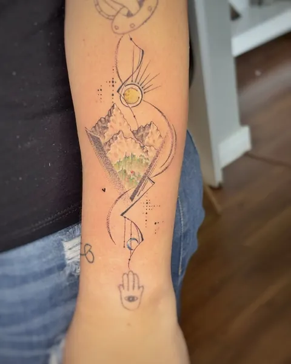
Criações exclusivas
Histórias contadas a partir do fineline: linha fina, sombreado delicado e pontos de preto sólido para dar contraste. O céu é o limite. O limite é o tamanho disponível.
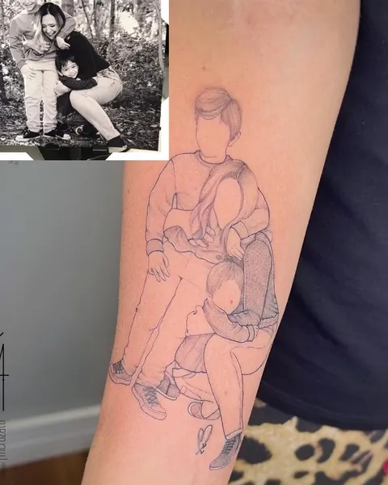
Fotos minimalistas
Releitura de fotos para emoldurar no corpo a essência afetiva do momento. Delicadas, cheias de significado e únicas.
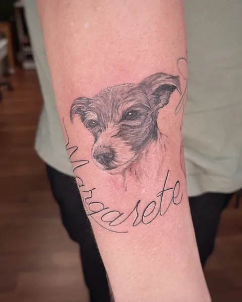
Realismo pet
Reprodução da foto do seu pet, com ou sem detalhes. Uma boa foto, com resolução decente, e espaço adequado fazem toda a diferença.
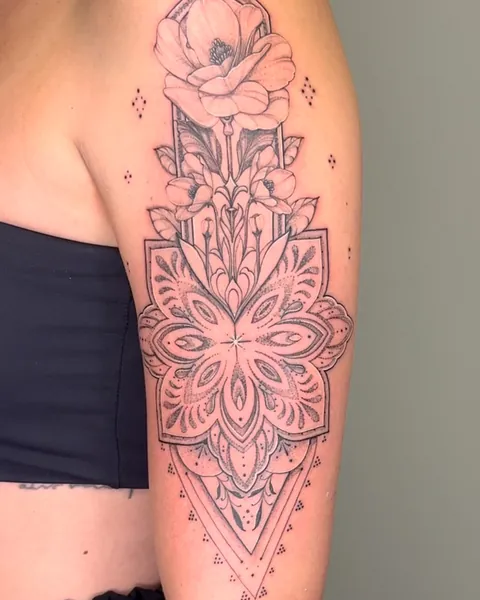
Energéticas
A preferida da tatuadora. Um amuleto criado a partir do seu mapa astral, com uma carta que explica as suas energias.
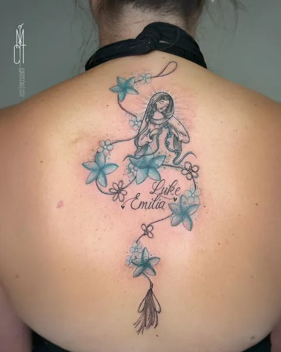
Reformas
Transformar aquela tattoo velhinha e sem graça em algo repaginado. Para quem gosta da tatuagem que fez história e hoje está cansada.
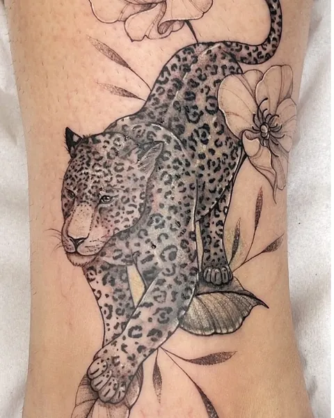
Coberturas
O oposto da reforma: para quando você não gosta mais da tatuagem antiga. Cobrir é um acordo entre o que você quer e o que é possível fazer.
Tatuagens energéticas
Um amuleto criado com base no seu mapa astral. Feitas sem pressa, com alma e foco em quem você realmente é.
O seu mapa
Sol, ascendente e lua: a tríade que mostra como você age, sente e se apresenta ao mundo.
A leitura das energias
Fogo, terra, ar e água. A arte equilibra o que pede movimento e o que pede raiz.
A arte e a carta
Desenho exclusivo, uma carta explicando as suas energias e um sigilo da sua palavra de força.
A surpresa
Uma arte que respeita os seus desejos, mas surpreende pela leitura e pelo autoconhecimento que só o mapa traz.
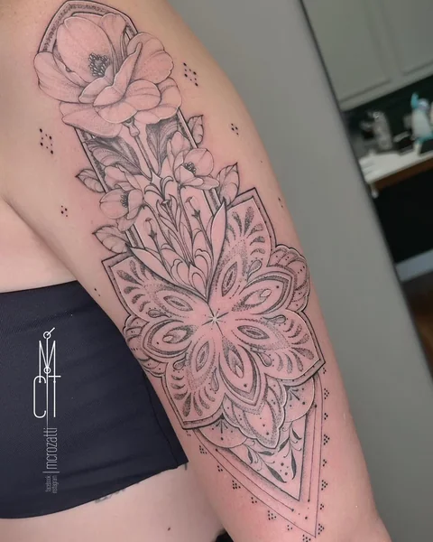
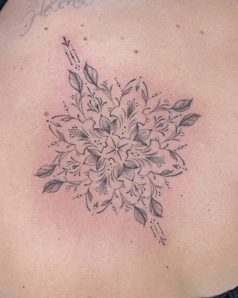
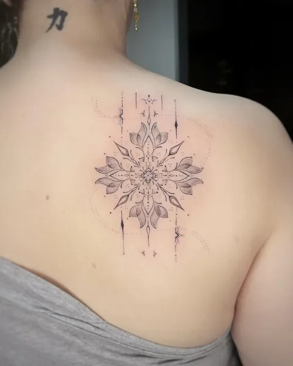
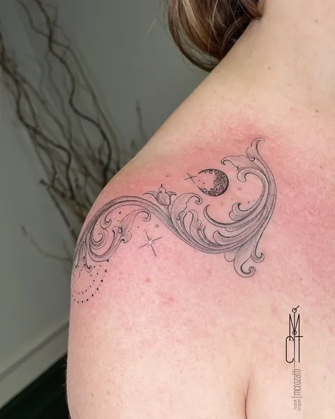
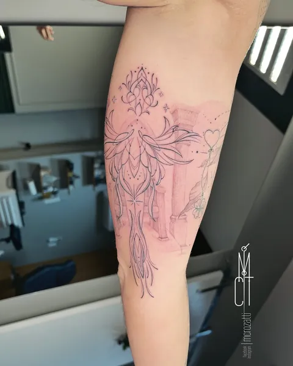
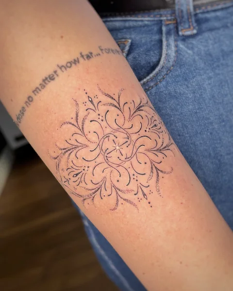
O valor de uma tatuagem não está só no desenho, mas na experiência de quem te marca para sempre, na leitura de quem você é e na delicadeza de transformar isso em arte permanente.
Marília
Os sábados são reservados para as energéticas.
Quero a minha energéticaTrabalhos
Uma seleção recente. Toque numa foto para ver maior.
Reformas e coberturas
Arraste a linha para comparar. Reforma devolve contraste e leitura à tatuagem que você ama; cobertura troca a que você não quer mais.
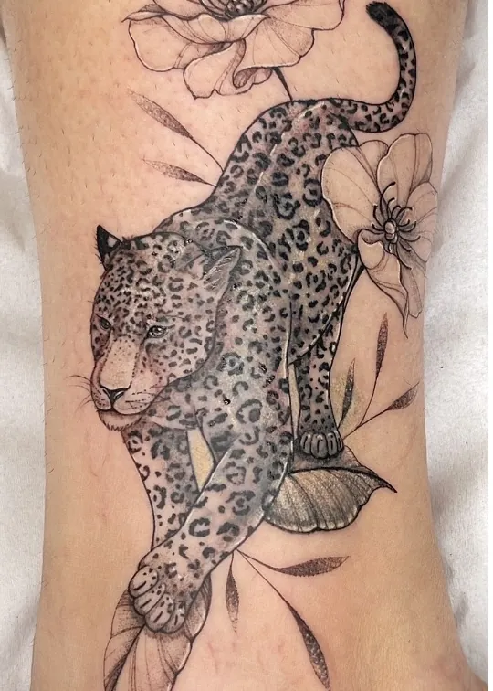
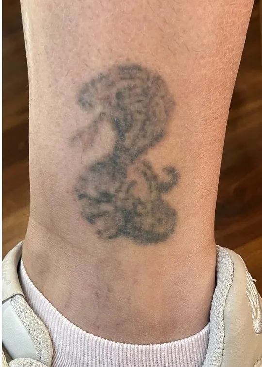
Cobertura
Onça e flores sobre uma tatuagem escura e antiga
Reformas e coberturas passam por uma avaliação presencial antes, para conversar sobre o que é possível. Isso não é negociável.
Marcar avaliação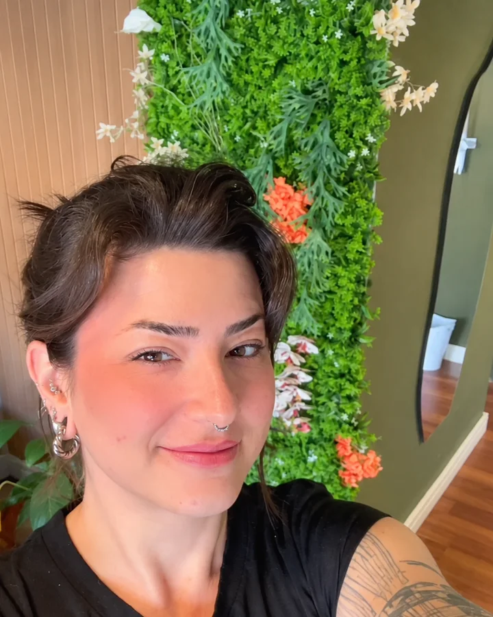
Marília Crozatti
Paulista, canceriana com lua em Áries, tatuadora desde 2015. Estilo favorito: fineline detalhada.
Antes da máquina, trabalhava de madrugada na IBM. Hoje atende no Studio Ink'Alma, em Campinas, com horário marcado. Tem cliente que tatua com ela há dez anos e volta a cada fase da vida.
Tatuar, para ela, é muito mais que adornar a pele: é conexão, histórias sendo contadas e memórias divididas. É sobre estar presente.
- 11 anos
- de fineline
- 15 mil
- no Instagram
- 1.800+
- trabalhos postados
O estúdio
Cada momento no estúdio é exclusivo seu. Sinta-se à vontade para mergulhar no processo.
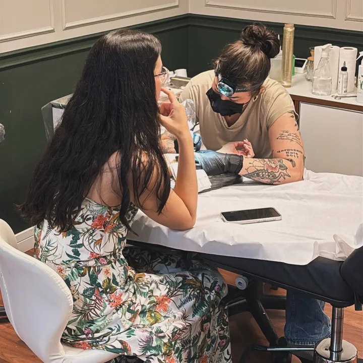
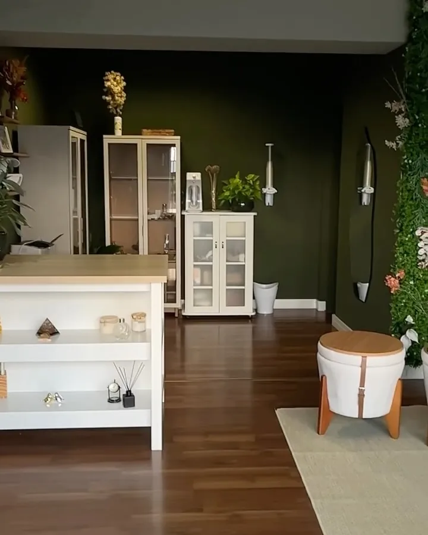
No estúdio, pode pedir sem medo
- Mudar o decalque. Região, tamanho e posição: dá para apagar o decalque e fazer outro. A tattoo pronta, não.
- Ajustar o ar. O importante é você estar confortável.
- Fazer pausas. É bom para as duas. A tatuadora também precisa se alongar.
- A senha do Wi-Fi ou um carregador. Pode pedir tranquilamente.
- Tirar foto. Ela ama. Só avisa antes, para ela arrumar a postura.
Incensos da linha Hemp
Feitos à mão, com terpenos. Caixa com 8 varetas de 23 cm, cerca de 1 hora de queima cada. Disponíveis no estúdio.
Mango Kush
Relaxante · Calmo
Doce e frutado. Para descanso, meditação ou trazer leveza ao dia.
Tropicana Cookies
Energizante · Revigorante
Doce e tropical. Desperta a energia vital e traz alegria.
Pineapple Pie
Vitalidade · Positividade
Frutal tropical de abacaxi. Eleva o astral e renova as energias.
Purple Hindu Kush
Calma · Relaxamento
Cerejas e amêndoas. Para o fim do dia e um espaço de paz.
Quem tatuou
Entregar minha pele para uma tatuagem energética, sem saber exatamente o que seria marcado ali. O processo foi intuitivo, quase um ritual. No fim, o desenho fez total sentido.
Musa da fine line e do tarot! Dez anos que ela me tatua. Obrigada por me ler tão bem sempre!
Desde a conexão com a artista até o significado profundo por trás de cada traço, senti uma transformação única.
Como agendar
Conte a ideia
Pela ficha ao lado ou direto no WhatsApp: estilo, local do corpo e tamanho aproximado.
Mande referências
Fotos de referência, a foto do pet ou da pessoa, e a foto do local. Confie no processo de criação.
Marque o horário
Atendimento com horário marcado. Reformas e coberturas começam por uma avaliação presencial.
Bom saber
Nem todo desenho fica bom em qualquer tamanho ou lugar do corpo. Um atraso de cinco minutos é melhor que chegar muito adiantado. E "fica à vontade para criar, confio no seu trabalho" é a melhor frase que ela pode ouvir.